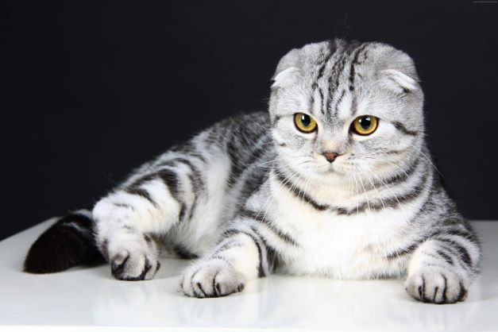

Кота зовут Плющ. К нам он приехал из Кошатинска, чтобы узнать как тут живется в Москве. И решил задержаться, проверить, как у нас тут все устроено.
Кот очень наглый и уверенный в себе. Он воспитывает нашу собаку Алабая и катается на нем верхом. И вообще часто недоволен, когда много народу дома и все мешают ему спать.
Все об этой чудесной породе котов

Юный мечтатель
После парикмахерской